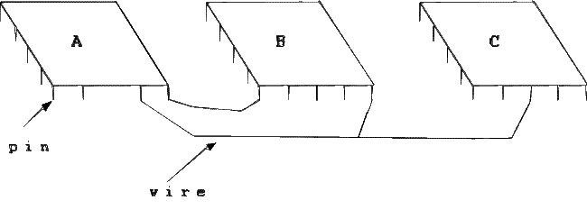
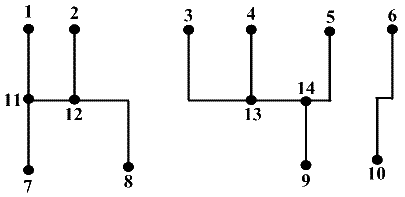

Circuit Nets
An electronic circuit consists of components, pins, and wires. Figure 1 shows a circuit with the three components A, B, and C. Each wire connects a pair of pins. Two pins a and b are electrically equivalent if they are either connected by a wire or there is a sequence a1, a2, ..., ak of pins such that a,a1; a1,a2; ...; ak-1,ak; and a_k, b are all connected by wires. A net is a maximal set of electrically equivalent pins. Maximal means that no pin outside the net is electrically equivalent to a pin in the net.

Given a set of pins and a set of wires your task is to determine the number of nets defined within the circuit. Figure 2 illustrates a circuit with 3 nets.

The input begins with a single positive integer on a line by itself indicating the number of the cases following, each of them as described below. This line is followed by a blank line, and there is also a blank line between two consecutive inputs.
The sequence of pins is always numbered from 1 to N. The first input value is the value of N. The sequence of wires is described by pairs of pin values. It is given at the input as sequence of numbers, separated by a space. The first two numbers define the first pair, the two numbers that follow define the second pair, and so on. The input ends with the end_of_file mark.
For each test case, the output must follow the description below. The outputs of two consecutive cases will be separated by a blank line.
The output is just the number of nets found.
Sample Input
1
14
1 11 7 11 2 12 12 8 11 12 3 13 4 13 13 14
14 9 5 14 6 10
Sample Output
3